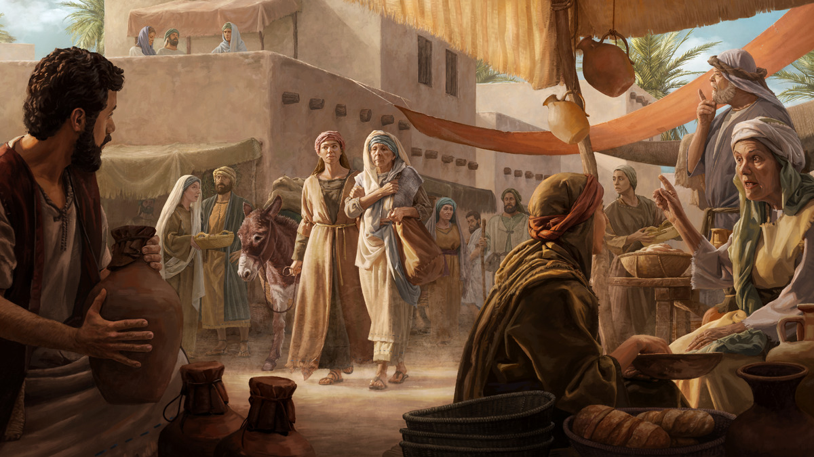
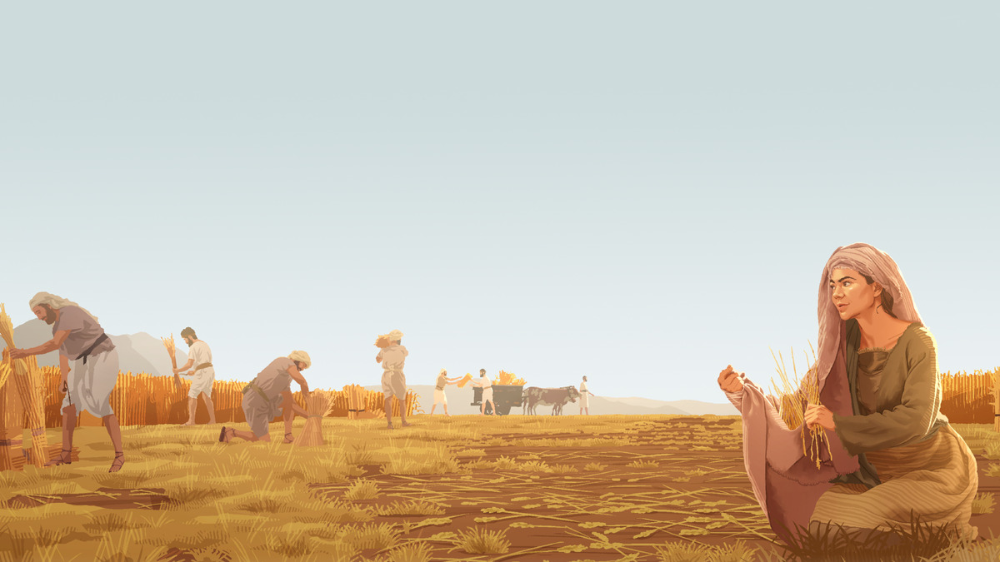
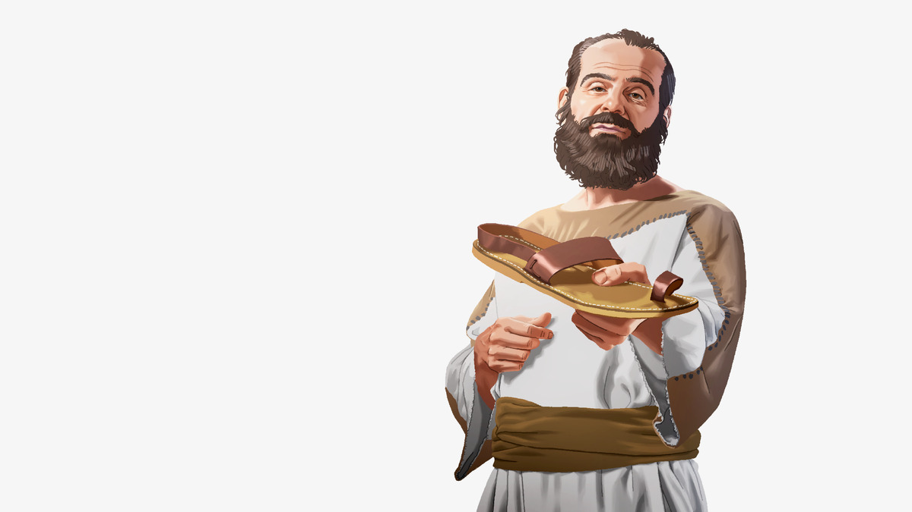
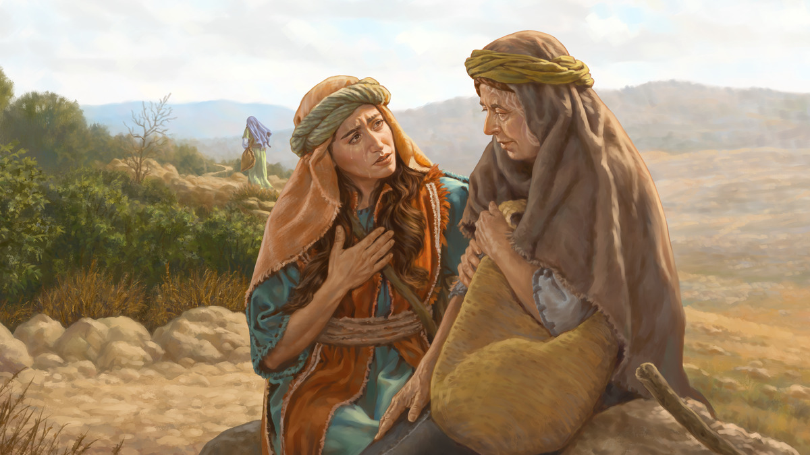
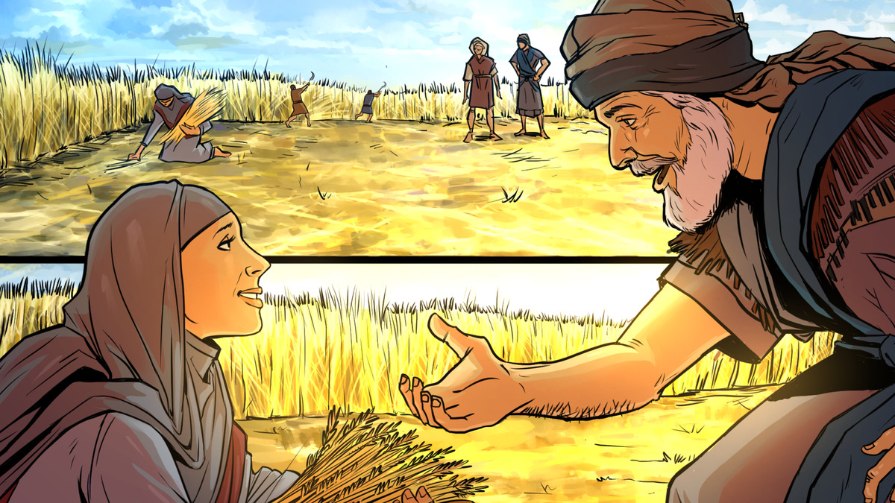

15 Noemi e Rute · semana de 2 a 8 de novembro de 2026
Elas enfrentaram juntas as dificuldades
Leia o relato na Bíblia: Rute 1, 2, 3 e 4
Tempo do estudo: 30 minutos (parte 8 da reunião)
Palavras que aparecem no estudo: respigar é recolher o que sobra no campo depois que os ceifeiros passam. Eira é o lugar de terra batida onde o grão era separado da palha. Resgatador era o parente próximo que podia comprar de volta a terra da família e se casar com a viúva.
Cada parágrafo traz o conteúdo resumido, com as frases do capítulo, os textos bíblicos escritos e um link direto para o texto oficial no jw.org.
Noemi enfrentou uma tragédia após outra. Houve fome em Israel, e o marido dela levou a família de Belém para Moabe. Lá, o marido morreu, e ela ficou sozinha com os dois filhos numa terra estrangeira. Os filhos se casaram com moabitas, mulheres que não adoravam a Jeová. Uns dez anos depois, os filhos também morreram, sem deixar filhos. Noemi perdeu o marido, os filhos e a esperança de ter netos.
Noemi decidiu voltar para Belém, numa viagem que talvez levasse uma semana. As noras, Rute e Orpa, começaram a viagem com ela. Mas doía em Noemi a ideia de tirar as duas da sua terra e dos seus parentes. Sem pensar em si mesma, pediu que voltassem para a casa das mães e estava disposta a seguir sozinha. Orpa chorou e foi embora. Rute também chorou, mas continuou com Noemi.
Rute disse a Noemi que iria aonde ela fosse e passaria a noite onde ela passasse. “Seu povo será o meu povo, e seu Deus será o meu Deus.” Só a morte ia separar as duas. Essa jovem leal e corajosa decidiu adorar a Jeová, assim como Noemi.
Duas viúvas lidaram com a tristeza e encontraram consolo entre o povo de Jeová

Rute foi com Noemi para Israel e deixou para trás a família, a cultura e os deuses. Em Belém, algumas mulheres ficaram chocadas de ver como Noemi tinha mudado. Noemi disse que tinha se tornado uma mulher amarga, porque Jeová tirou tudo dela e a deixou de mãos vazias. Se essas palavras magoaram Rute, a Bíblia não diz. Rute começou a respigar cereal para sustentar a si mesma e a Noemi.
Um dono de terras rico e justo, Boaz, filho de Raabe, notou Rute trabalhando duro e quis saber quem ela era. Ficou sabendo do esforço dela para ajudar Noemi. Boaz elogiou Rute por ter escolhido se refugiar em Jeová e buscar a proteção dele. E mandou que os trabalhadores não incomodassem Rute.
Naquela noite, Noemi ficou animada quando soube da bondade de Boaz. Ele era parente da família. A Lei de Deus dizia que a viúva que ainda podia ter filhos tinha o direito de se casar com um parente próximo do marido falecido. Assim ela poderia ter um filho em nome do marido, e a herança e a família dele continuariam. Noemi disse a Rute o que fazer.
Rute aceitou fazer o que Noemi disse, mesmo que aquilo parecesse estranho e assustador. À noite, foi até a eira, onde os homens costumavam dormir perto das pilhas de grãos. Com cuidado, descobriu os pés de Boaz e se deitou ali. Quando ele acordou, ela falou da lei de Deus e de como se aplicava a ela. Boaz ficou admirado com a coragem dela e com o amor dela por Jeová e pela família.
No dia seguinte, Boaz foi até os anciãos de Belém e fez tudo de acordo com a lei de Deus. Casou com Rute, e com o tempo ela teve um filho. Noemi amava muito o neto, Obede. Ele foi avô do rei Davi, e mais de mil anos depois o Messias nasceu dessa família. Jeová recompensou muito a coragem de Noemi e Rute.
Para considerar
De que maneiras Noemi e Rute mostraram coragem?
Meu comentário comentário base · até 30 s
Do Guia de Pesquisa Rute 1:16; 3:9
- it-2 “Rute” § 2: o profundo amor por Noemi e o desejo sincero de servir a Jeová junto com o povo dele levaram Rute a deixar os pais e a sua terra, “com pouca perspectiva de obter a segurança que o casamento poderia proporcionar-lhe”.
- ia cap. 5 § 16: na eira, “com o coração acelerado, Rute se aproximou lentamente” e esperou. “O tempo foi passando, mas para Rute deve ter parecido uma eternidade.”
- Para os de idade: Noemi já não era jovem quando recomeçou a vida em Belém. Recomeçar depois de perder o cônjuge, mudar de cidade ou ir morar com um filho também exige coragem.
- O Guia ainda indica, no tema coragem: “Seja corajoso, Jeová está com você!” (w13 15/1 p. 9 § 10).
Analise mais a fundo
1. Por que a lei que Jeová tinha dado aos israelitas sobre a respiga era notável?
(ia 39 § 23, nota) A
Meu comentário comentário base · até 30 s

Do Guia de Pesquisa Levítico 19:9, 10
- ia cap. 4, nota de § 23: naquela época, no Oriente Médio, as viúvas eram tratadas muito mal. Uma obra citada diz que, sem filhos, “talvez só lhe restasse se vender como escrava, recorrer à prostituição ou morrer”.
- w05 1/3 p. 27: embora tivesse o direito de respigar, Rute pediu permissão (Rute 2:7). “Isso indica que ela era uma pessoa mansa.”
- it-2 “Rute, Livro de” § 5: o livro mostra “de forma vívida” como funcionavam as leis da respiga e do casamento de cunhado.
2. Por que podemos dizer que Rute não se aproximou de Boaz para ter relações sexuais?
(ia 47 §§ 17-18)
Meu comentário comentário base · até 30 s
Do Guia de Pesquisa Rute 3:9-11
- it-2 “Rute” § 6: o que Rute fez “deve ter ocorrido segundo o proceder costumeiro seguido pelas mulheres quando reivindicavam seu direito ao casamento de cunhado”.
- it-2 “Rute” § 8: os dois se levantaram ainda no escuro, “evidentemente para evitarem rumores”. E Boaz chamou Rute de “mulher de bem” diante de todo o povo da cidade.
- ia cap. 5 § 18: “no primeiro caso” era o amor leal por Noemi. “No último caso” era escolher um homem mais velho para manter o nome da família do marido falecido.
3. O que aprendemos sobre Boaz por ele ter chamado Rute de “filha”?
(Rute 2:8; w16.11 3 §§ 4-6)
Meu comentário comentário base · até 30 s
Do Guia de Pesquisa Rute 2:8-12
- w16.11 p. 3: “Jesus e Boaz são excelentes exemplos para os anciãos.” Depois de orar e escutar a irmã com paciência, eles conseguem tranquilizar e consolar usando a Bíblia.
- ia cap. 4 § 26: Boaz cumprimentava todos os trabalhadores, talvez até os de um dia e os estrangeiros: “Jeová seja convosco.” Esse homem mais velho mostrou “um interesse paternal em Rute”.
- Mateus 9:22: “Coragem, filha! A sua fé fez você ficar boa.”
4. Ao contrário do homem identificado como “Fulano”, de que maneira Boaz mostrou que não era egoísta quando concordou em se casar com Rute?
(w23.03 14) B
Meu comentário comentário base · até 30 s

Do Guia de Pesquisa Rute 4:6, 10
- w23.03 p. 14: “Fulano não estava disposto a arriscar perder sua herança para ajudar Noemi.” Ele queria preservar o próprio nome, “mas aconteceu justamente o contrário”.
- w05 1/3 p. 29: o resgatador pagava pela terra de acordo com os anos que faltavam até o Jubileu, e isso reduzia o valor dos bens dele. E o filho de Rute herdaria a terra comprada.
- A sandália: Rute 4:7 explica o costume. Para confirmar um negócio, a pessoa “tirava a sandália e a dava ao outro”. Rute 4:7, 8
Medite no que aprendeu
Rute era uma mulher trabalhadora e que mostrava gratidão. Como essas qualidades podem nos ajudar se tivermos problemas financeiros?
C
Meu comentário comentário base · até 30 s
Do Guia de Pesquisa Rute 2:7, 10, 13
- ia cap. 4 § 30: Rute é “um excelente exemplo para todos os que lutam pelo sustento nesta época de dificuldades econômicas”. Ela aceitou conselhos sobre como trabalhar com segurança e “nunca perdeu de vista onde estava seu verdadeiro refúgio”.
- ia cap. 4 § 25: era um trabalho lento e cansativo, que ficava mais difícil com o passar do dia. Rute parava só para enxugar o suor e comer uma refeição simples.
- Para os de idade: com a aposentadoria curta, pode ser preciso aceitar ajuda. Receber com gratidão e ajudar no que ainda dá, como cuidar de uma criança ou fazer uma comida, é o espírito de Rute.
Quando Noemi estava se sentindo arrasada, Rute a ajudou a enfrentar a situação. O que aprendemos com Noemi sobre aceitar a ajuda de outros? O que aprendemos com Rute sobre encorajar outros?
Meu comentário comentário base · até 30 s
Do Guia de Pesquisa Rute 1:18, 21
- w21.11 § 17: mesmo que no início a irmã não aceite a nossa ajuda, o amor leal nos motiva a continuar do lado dela. “Esperamos que, em algum momento, ela perceba que continuamos ali com a mão estendida.”
- w21.11 § 12: geralmente, a melhor maneira de ajudar quem está desanimado é escutar com atenção e garantir que amamos a pessoa.
- Uma cena: a irmã idosa que perdeu o marido diz “não precisa vir, eu me viro”. Rute não iria embora na primeira recusa. Volte, ligue de novo, sente e escute.
- 1 Tessalonicenses 5:14: “Consolem os que estão deprimidos, amparem os fracos.”
De que outras maneiras você pode imitar a coragem de Noemi e Rute na sua vida?
Meu comentário comentário base · até 30 s
Do Guia de Pesquisa Rute 1:6
- ia cap. 4 § 11: tragédias acontecem a pessoas boas e más. Diante de uma perda difícil, “é bom recorrer ao consolo de outros, especialmente dos que se refugiam em Jeová”.
- ia cap. 5 § 13: o exemplo de Rute lembra que ouvir a sabedoria de pessoas mais velhas que nos amam “pode ser muito recompensador”. Salmo 71:17, 18
- ia cap. 4 § 19: precisamos de amor leal no casamento, com os parentes e amigos, e na congregação.
Pense no quadro completo
O que esse relato me ensina sobre Jeová?
Meu comentário comentário base · até 30 s
Do Guia de Pesquisa Rute 2:20
- w21.11 § 10: Jeová sabe que “a opressão pode levar o sábio à loucura” (Ecl. 7:7). Noemi precisava de ajuda para entender que Jeová estava do lado dela.
- w21.11 § 23: “Finalmente, Noemi conseguiu enxergar a mão de Jeová em sua vida.” Ela deve ter pensado: ‘Jeová nunca me abandonou.’ Salmo 136:23
- ia cap. 4, quadro sobre o livro de Rute: esse pequeno livro lembra que “Jeová está sempre atento às pessoas pacíficas que lutam com os problemas do dia a dia”.
Como esse relato está relacionado com o propósito de Jeová?
Meu comentário comentário base · até 30 s
Da Bíblia e do Perspicaz Rute 4:17; Mateus 1:5
- it-2 “Rute, Livro de” § 5: o fato de Rute ser moabita e ser favorecida assim ilustra Romanos 9:16: “não depende da vontade da pessoa ou do seu esforço, mas de Deus, que tem misericórdia”.
- Rute 4:18-22: o livro termina com a genealogia de Peres até Davi. Rute 4:18-22
O que eu gostaria de perguntar para Noemi e Rute quando elas forem ressuscitadas?
Meu comentário comentário base · até 30 s
Aprenda mais
Que lições sobre amor leal podemos aprender com o livro de Rute, e como podemos aplicar essas lições?
“Continuem a mostrar amor leal uns pelos outros” (w21.11 8-13)
Meu comentário comentário base · até 30 s
Da Sentinela Rute 1:16-18; 2:12
- w21.11 §§ 6-7: um funcionário pode ficar anos na mesma empresa só pelo salário. O amor leal é diferente porque vem do coração: “não por obrigação, mas porque querem”.
- w21.11 §§ 13-14: Orpa fez o que se esperava dela. Rute foi além. “O amor leal nos motiva a fazer mais do que se espera de nós.”

Leia o artigo completo.
“Continuem a mostrar amor leal uns pelos outros” (w21.11 8-13), no jw.org.

Use esta história bíblica ilustrada para ajudar sua família a dar vida a esse relato.
“Rute é uma amiga leal” (ijwis artigo 12), no jw.org.
Guia de Pesquisa: verbetes “Rute” e “Noemi”
O que o Guia de Pesquisa do seu JW Library lista para as duas, por assunto. Bom para achar um comentário diferente.
- Informações gerais: it-2 “Rute” e “Noemi”; “Aonde quer que fores, irei eu” (ia cap. 4); “Uma mulher de bem” (ia cap. 5); Perguntas dos Leitores (w23.03 p. 14); “O casamento improvável de Boaz e Rute” (w03 15/4 23-26); lfb hist. 33
- Amor leal: “Continuem a mostrar amor leal uns pelos outros” (w21.11 9-13); “Sempre mostre amor leal” (mwb22.01 p. 6); “‘Jeová salva os que estão desanimados’” (w20.12 18-19); w05 1/3 p. 27 § 6
- Ajudar outros: “Como ajudar as viúvas nas suas provações” (w01 1/5 4-6); “Como os cristãos podem ajudar os idosos” (w93 15/8 27-28)
- Humildade e mansidão: ia cap. 4 § 30; w05 1/3 p. 27 §§ 7-8 · Reputação: “Como você quer ser conhecido?” (mwb22.01 p. 8); “És uma mulher de bem” (w02 15/6 p. 32)
- Noemi, depressão e luto: “Mantenhamos a Jeová constantemente diante de nós” (w08 15/2 5-6); “Como lidar com sentimentos negativos” (w01 15/4 23-24)
- Para crianças: “Vamos Aprender Com os Amigos de Jeová: Rute” (vídeo); “Rute foi uma amiga de verdade” (vídeo); my hist. 51
Roteiro de 30 minutos
Estudo de livro, oito parágrafos e as quatro seções de pergunta. Os tempos são referência: o que passar de um item, tire do outro.
Abertura com uma pergunta
“Alguém aqui já sentiu que voltou para casa de mãos vazias?” Depois diga aonde o estudo vai chegar: Noemi sentiu isso, e Jeová não a deixou sozinha.
Leitura dos oito parágrafos
Designe um irmão. São parágrafos curtos: leia §1 a §3, a frase em destaque, e depois §4 a §8.
Leituras bíblicas com a assistência
Rute 1:16, 17, Rute 2:12 e Rute 4:14, 15. A escolha de Rute, o refúgio debaixo das asas de Jeová e o neto no colo de Noemi.
Para considerar
As maneiras de coragem das duas. Aceite dois comentários: um sobre Noemi e outro sobre Rute.
Analise mais a fundo
Quatro perguntas, uns 2 minutos cada. Mostre a imagem A na respiga e a imagem B na sandália de Fulano.
Medite no que aprendeu
Mostre a imagem C. Na pergunta sobre aceitar ajuda, dê espaço para um irmão de idade comentar.
Pense no quadro completo
Sobre Jeová, o propósito e a pergunta da ressurreição, que pode ser rápida.
Aprenda mais
Recomende “Continuem a mostrar amor leal uns pelos outros” e a história ilustrada para as crianças.
Encerramento
Feche com: “Noemi voltou de mãos vazias. No fim, estava com um neto no colo e o nome da família garantido.”
Se o tempo apertar
Pode cortar: a pergunta 2 de “Analise mais a fundo”, resumindo em uma frase, a leitura de Rute 4:14, 15 e a última pergunta do quadro completo.
Não pode faltar: a escolha de Rute na estrada, as “mãos vazias” de Noemi, a lei da respiga, o contraste entre Boaz e Fulano e a imagem C.
Resumo: os pontos altos deste estudo
Para o encerramento, ou para revisar depois em casa.
O caminho que percorremos
- Uma tragédia após outra. Marido, filhos e a esperança de netos. §1
- Uma escolha na estrada. Orpa voltou; Rute escolheu Jeová. §2, §3
- Mãos vazias, mas não sozinha. A respiga e a bondade de Boaz. §4, §5
- Coragem para seguir a lei de Deus. O plano de Noemi e a noite na eira. §6, §7
- Jeová recompensou as duas. Obede no colo de Noemi e a família do Messias. §8
Os sete pontos altos
- Noemi perdeu marido, filhos e netos que nem chegaram a nascer, e ainda pensou primeiro nas noras.
- Orpa voltou para o seu povo e os seus deuses. Rute escolheu o povo e o Deus de Noemi.
- Amor leal é o amor que se apega e se recusa a largar.
- Noemi disse que voltou de mãos vazias, com Rute ali do lado. Rute não levou para o lado pessoal.
- A Lei de Jeová deixava as sobras do campo para o pobre, o estrangeiro e a viúva.
- Boaz chamou Rute de “filha” e aceitou perder para manter o nome do falecido. Fulano quis guardar e perdeu.
- A moabita que deixou tudo por Jeová entrou na família de Jesus.
Três frases para o encerramento
- “Rute deixou os deuses de Moabe, mas não deixou Noemi.”
- “Noemi voltou de mãos vazias. Jeová não a deixou assim.”
- “Fulano quis guardar o nome e ninguém lembra dele. Boaz aceitou perder e está na família de Jesus.”
Suas respostas
Cada campo já vem com um comentário pronto. O que você ajustar fica salvo automaticamente neste navegador, neste aparelho. Para levar para outro aparelho, baixe o arquivo aqui e carregue no outro lado.
O arquivo é um .json com os seus comentários e as anotações marcadas como vistas. Carregar substitui o que estiver escrito nesta página, e a página avisa antes.
Preparação baseada no capítulo 15 do livro Ande Corajosamente com Deus, “Elas enfrentaram juntas as dificuldades”. Publicações consultadas: Imite a Sua Fé, capítulos 4 e 5; A Sentinela de novembro de 2016, novembro de 2021, março de 2023 e 1/3/2005; Estudo Perspicaz, verbetes “Rute”, “Rute, Livro de”, “Noemi”, “Nome” e “Campo”; Guia de Pesquisa do JW Library. Bíblia: Tradução do Novo Mundo da Bíblia Sagrada, wol.jw.org, com 848 versículos incluídos nesta cópia para funcionar sem internet.
Os resumos, os comentários base, as anotações e o roteiro são notas de preparação pessoal, não material publicado pelas Testemunhas de Jeová. O capítulo, as imagens e o texto da Bíblia são propriedade da Watch Tower Bible and Tract Society.